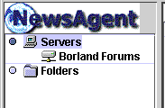

Setting Up A News Server |
One of the many uses of the Internet is for sending and receiving email. Similarly, posting messages to common groups (called Newsgroups) is a popular use of the network. The technology involved is sometimes referred to as Network (or USENET) News.
To use Network News, your computer must be able to connect to a News Server. A News Server is a computer running a special program which receives news from clients and other servers, forwards news onto other servers and stores news.
In order to use NewsAgent, you will have to know the Internet host name of a News Server. If you are unsure about this, ask your system administrator.
|
As well as local news servers, run by your ISP (Internet Service Provider) or system administration, there are some public News Servers which anyone with a connection to the Internet can access. One popular public server is run by Microsoft. Its host name is: public.microsoft.com Similarly, Borland run a server called: forums.borland.com |
It is relatively easy to tell NewsAgent about News Servers you wish to use. To add a News Server:

| Server 'Nice' Name | Anything you like: NewsAgent will use this name to refer to the server in future. E.g. Borland Forums |
| Server Hostname | The Internet hostname for your News Server. E.g. forums.borland.com |
| Server Port | The TCP port on which the server is running. Press the Default button to set this to the default value (119), which will normally work correctly. |
| My Server Requires Me to Log In | Check this box if your server needs a username and password for any reason. The administrator of your news server will be able to tell you if this is the case. |
| Login | If your server requires you to log in, enter your login name here. |
| Password | If your server requires you to log in, enter your password here. The password will not be echoed to the screen. |
You should now be able to see the News Server in the tree on the left side of NewsAgent's main window.

[ See Also: The Add / Edit Server Properties Dialogue Box | Servers: Remove | Servers: Properties | The Servers Panel of the Preferences Dialogue Box ]
Next Page: Setting Up Newsgroup Subscriptions